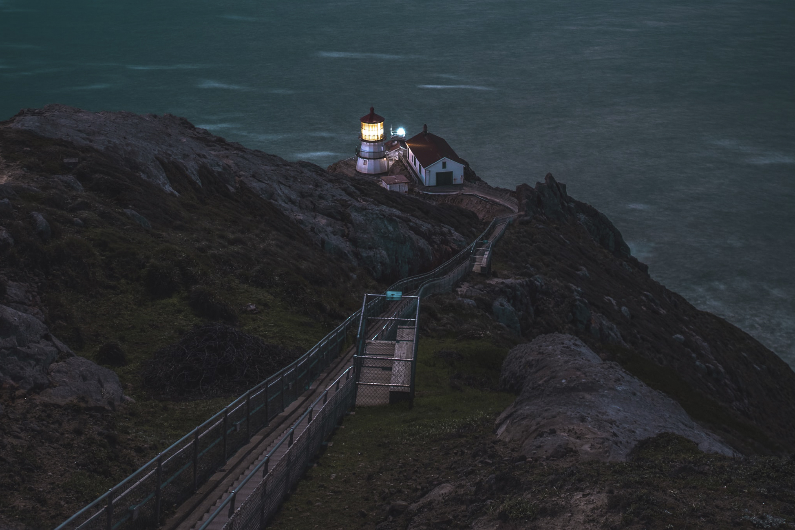

The Point Reyes Lighthouse, also known as Point Reyes Light or the Point Reyes Light Station, is a lighthouse in the Gulf of the Farallones on Point Reyes in Point Reyes National Seashore, located in Marin County, California, United States. The park's adjacent Lighthouse Visitor Center features exhibits about the lighthouse and the park's marine life and natural history. Visitors can climb about 300 steps down to the lighthouse itself, weather permitting. The main chamber of the lighthouse, known as the Lens Room, features the Fresnel lens and clockwork mechanism, and is open to the public on a limited basis. A lighthouse was assigned to Point Reyes in 1855, but construction was delayed for fifteen years because of a dispute between the United States Lighthouse Board and the landowners over a fair price for the land. The lighthouse is a sixteen sided, 37-foot (11 m) tower, and a twin of Cape Mendocino Light. The first-order Fresnel lens was first lit on December 1, 1870. Electricity came to the lighthouse in 1938, and concrete steps were built into the cliff in 1939. The station was automated in 1975. The following historical information from March 1962 is maintained on the USCG web site: Point Reyes Light Station was established in 1870 at Point Reyes, Calif., 19 miles (31 km) from the nearest town of Inverness. It is a family station with a complement of four men who maintain a first order light, fog signal and radio beacon. The light tower itself is a sixteen-sided structure of forged iron plate (the original tower) bolted to solid rock. The top of the lantern is 37 feet (11 m) above the ground and focal plane of the light is 294 feet (90 m) above sea level. To reach the light, men assigned must descend 308 steps on the headland from the plateau above the station where the family quarters are situated. The quarters are new, two-story, four-family units (four-plex) built in 1960. The four-plex contains two 2-bedroom and two 3-bedroom units. Buildings maintained on the property, in addition to the family quarters, are the fog signal building, engine room, pump house, paint locker, double garage and a four-car carport with adjoining office and workshop. Point Reyes is, by official records, the windiest and foggiest on the Pacific Coast. The station is frequently blanketed by week-long periods of fog and few years pass that do not see violent gales of 75 to 100 miles per hour (121 to 161 km/h) strike the area. Point Reyes Light Station is one of the District's outstanding tourist attractions. On fair summer weekends we often have several hundred visitors logged aboard. Escorting visitors has become a major portion of the duties of men assigned. Dependent children on the station travel three miles (five kilometers) by station vehicle to school. Commissary and post exchange privileges are available at Hamilton Air Force Base (the nearest armed forces installation), or in the San Francisco area. he lighthouse was used as a location for the 1980 John Carpenter film The Fog. It is also the subject of a poem by Weldon Kees, "The Exposed Reef." Kees, together with filmmaker and photographer William Heick, later made a documentary film about the lighthouse and its environs in 1954-55. The Point Reyes Headlands jut 10 miles (16 km) out to sea and pose a threat to ships traveling between San Francisco Bay and locations to the north. The historic Point Reyes Lighthouse was built in 1870 to warn mariners of this navigational hazard and served for 105 years. The Point Reyes Lighthouse was retired from service in 1975 when the U.S. Coast Guard installed an automated light adjacent and below the historic tower. The Coast Guard then transferred ownership of the lighthouse to the National Park Service, which has taken on the job of preserving this fine specimen of our maritime heritage.
